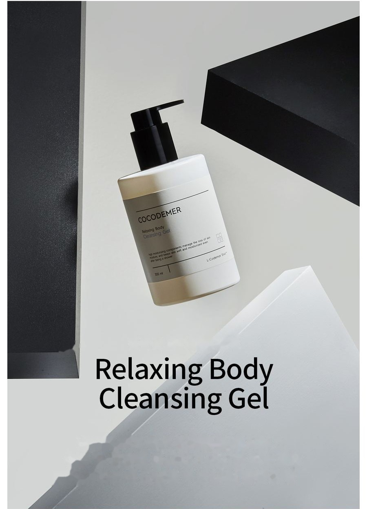
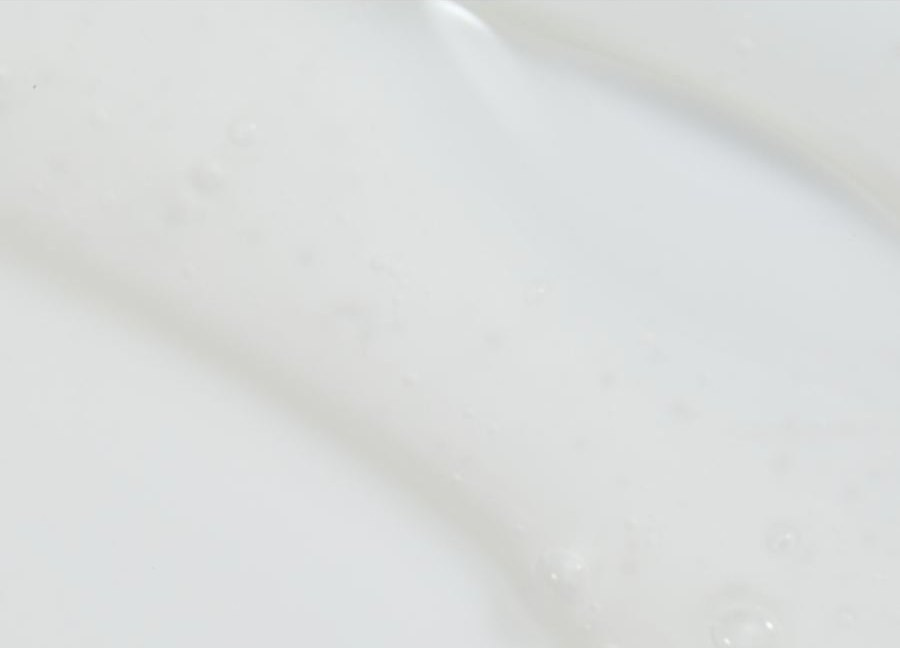
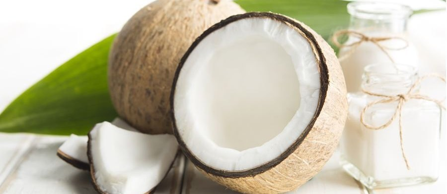
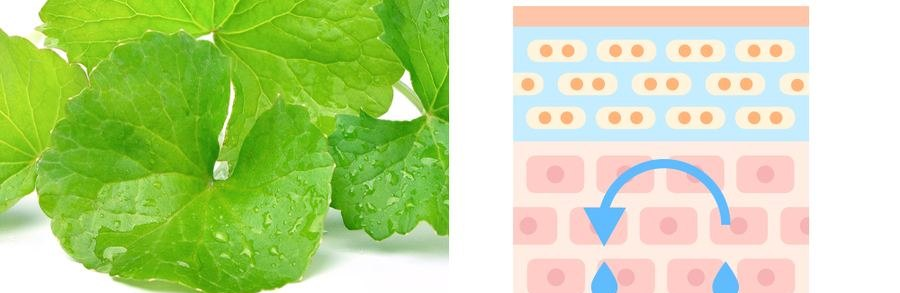
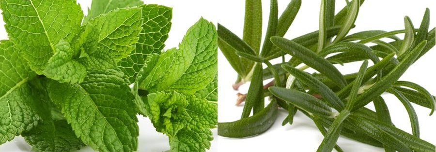

COCODEMER Relaxing Body Cleansing Gel
| Objem | 300ml |
|---|---|
| Vhodné pro | Všechny typy pleti |
| Klíčová technologie | L-CODEMAR ELIXIR™ |
| Výrobce · Odpovědný distributor | JUNGCOS CO., LTD. / COCODEMER CO., LTD. |
Tento produkt vznikl v rámci naší řady kosmetiky na míru. V současné době není v prodeji. S dotazy na opětovnou výrobu nebo obnovu se na nás prosím obraťte prostřednictvím poptávky B2B.

Tělový čisticí gel, který odstraňuje usazené nečistoty a dodává vláhu a výživu, čímž pomáhá udržet pokožku hladkou a zdravou
Čisticí přípravek založený na technologii čisticího systému bez poškození pokožky
Čistí jemně a nenarušuje kožní bariéru, takže jej může pohodlně používat i citlivá pokožka.
Vytváří bohatou, polštářovitou pěnu, která dodává vláhu a výživu a zanechává pokožku zdravou a plnou života.

Rostlinné extrakty — lopuch, perila, fík a Centella Asiatica — jsou zpracovány do lecitinových liposomů v nano měřítku pro stabilní, rovnoměrné čištění, které pomáhá udržet pokožku těla čistou a svěží.
Složky rostlinného původu pomáhají zklidnit pokožku a doplnit vláhu, a pomáhají tak udržet pokožku po sprše nevysušenou, s hladkou, hydratovanou strukturou.
* Výše uvedené se týká pouze konkrétní složky.
Kód klíčové účinné látky
- CaCentella AsiaticaZklidnění pleti
- HiHydrogenated LecithinKondicionace pleti
- CnCeramide NPPosílení bariéry
- IsInositolHydratační oligosacharid

Přírodní čisticí složka získaná z kokosového oleje odstraňuje nečistoty natolik jemně, že je vhodná i pro citlivou pokožku.

Složky podobné vlastní bariéře pokožky posilují její ochranný film a pomáhají jí udržet vláhu, takže pokožka zůstává i po umytí hydratovaná; zároveň pomáhají pokožku zklidnit.

Složky rostlinného původu pomáhají pokožku stáhnout a vracejí jí vitalitu, takže zůstává svěží a plná života.
* Výše uvedený text popisuje složky, nikoli hotový produkt.
Zobrazit přehled složky →
L-CODEMAR ELIXIR™
Vlastní technologie COCODEMER.
Naše jedinečná technologie vícevrstvého zapouzdření v nano-gelové emulzi stabilně váže hlavní účinné látky — kokosovou vodu, fytosteroly, 20 aminokyselin a extrakt z medu — do komplexu. Tento komplex je pak zpracován do liposomální formy šetrné k pleti, která napodobuje strukturu samotné pleti, a maximalizuje tak účinnost jejich přenosu do pleti.
L-Codemar Elixir™ posiluje vazby mezi kožními buňkami. Obnovuje poškozenou bariéru a vytváří silný ochranný film, takže hydratace vydrží déle.

Text na obrázku výše
L-CODEMAR ELIXIR™
- KOKOSOVÁ VODA
- MEDOVÝ EXTRAKT
- 20 DRUHŮ AMINOKYSELIN
- FYTOSTEROL

Text na obrázku výše
- Mikroby, jemný prach, žlutý prach, znečišťující látky a znečištění ovzduší
- Nadměrná ztráta vody
Poškozená pleť
Poškozené mezibuněčné lipidy oslabují vazby mezi buňkami epidermis
- Přidané mezibuněčné lipidy ↑
- Účinné látky
- Chrání před vnějším stresem a znečišťujícími látkami
- Menší ztráta vody
Zdravá pleť
Doplněné lipidy obnovují mezibuněčnou matrix → pevnější vazby mezi buňkami
Způsob použití
1. Otočte pumpičkou proti směru hodinových ručiček a stiskněte.
2. Naneste do dlaní nebo na sprchovou žínku a vytvořte pěnu.
3. Pěnu rozetřete po těle rukama nebo sprchovou žínkou.
4. Důkladně opláchněte vodou.
5. Po sprše pokožku jemně osušte poklepáním ručníkem.
Čisticí přípravek založený na technologii čisticího systému bez poškození pokožky
Čistí jemně a nenarušuje kožní bariéru, takže jej může pohodlně používat i citlivá pokožka.
Vytváří bohatou, polštářovitou pěnu, která dodává vláhu a výživu a zanechává pokožku zdravou a plnou života.
Rostlinné extrakty — lopuch, perila, fík a Centella Asiatica — jsou zpracovány do lecitinových liposomů v nano měřítku pro stabilní, rovnoměrné čištění, které pomáhá udržet pokožku těla čistou a svěží.
Složky rostlinného původu pomáhají zklidnit pokožku a doplnit vláhu, a pomáhají tak udržet pokožku po sprše nevysušenou, s hladkou, hydratovanou strukturou.
Přírodní čisticí složka získaná z kokosového oleje odstraňuje nečistoty natolik jemně, že je vhodná i pro citlivou pokožku.
Složky podobné vlastní bariéře pokožky posilují její ochranný film a pomáhají jí udržet vláhu, takže pokožka zůstává i po umytí hydratovaná; zároveň pomáhají pokožku zklidnit.
Složky rostlinného původu pomáhají pokožku stáhnout a vracejí jí vitalitu, takže zůstává svěží a plná života.
* Výše uvedený text popisuje složky, nikoli hotový produkt.
L-CODEMAR ELIXIR™
Vlastní technologie COCODEMER. Naše jedinečná technologie vícevrstvého zapouzdření v nano-gelové emulzi stabilně váže hlavní účinné látky — kokosovou vodu, fytosteroly, 20 aminokyselin a extrakt z medu — do komplexu. Tento komplex je pak zpracován do liposomální formy šetrné k pleti, která napodobuje strukturu samotné pleti, a maximalizuje tak účinnost jejich přenosu do pleti. L-Codemar Elixir™ posiluje vazby mezi kožními buňkami. Obnovuje poškozenou bariéru a vytváří silný ochranný film, takže hydratace vydrží déle.
1. Otočte pumpičkou proti směru hodinových ručiček a stiskněte. 2. Naneste do dlaní nebo na sprchovou žínku a vytvořte pěnu. 3. Pěnu rozetřete po těle rukama nebo sprchovou žínkou. 4. Důkladně opláchněte vodou. 5. Po sprše pokožku jemně osušte poklepáním ručníkem.
| Jmenovitý obsah (objem nebo hmotnost) | 300ml |
|---|---|
| Vhodné pro | Všechny typy pleti |
| Minimální trvanlivost / doba použitelnosti po otevření | 30 měsíců od data výroby; po otevření spotřebujte do 12 měsíců |
| Způsob použití | Na vlhké pokožce naneste přiměřené množství na houbu nebo žínku, vytvořte jemnou pěnu, rovnoměrně čistěte masážními pohyby a poté důkladně opláchněte vlažnou vodou. |
| Výrobce kosmetiky | JUNGCOS CO., LTD. |
| Odpovědný distributor | COCODEMER CO., LTD. |
| Země původu | Korejská republika |
| Úplné složení (INCI) | Cocos Nucifera (Coconut) Water, Water, Glycerin, Disodium Cocoamphodiacetate, Sodium Chloride, Cocamidopropyl Betaine, PEG-120 Methyl Glucose Dioleate, Butylene Glycol, Potassium Cocoyl Glycinate, PEG-120 Methyl Glucose Trioleate, Centella Asiatica Extract, Ficus Carica (Fig) Fruit Extract, Honey Extract, Mentha Piperita (Peppermint) Leaf Extract, Mentha Suaveolens (Apple Mint) Leaf Extract, Rosmarinus Officinalis (Rosemary) Leaf Extract, Salvia Officinalis (Sage) Leaf Extract, Hydrogenated Lecithin, 1,2-Hexanediol, Alanine, Arginine, Aspartic Acid, Carnitine, Ceramide NP, Citrulline, Glutamic Acid, Glutamine, Glycine, Hexylene Glycol, Isoleucine, Lauryl Glucoside, Leucine, Methionine, Ornithine, PEG-40 Hydrogenated Castor Oil, Phenylalanine, Phytosterols, Polyquaternium-39, Proline, Propanediol, Serine, Threonine, Tryptophan, Tyrosine, Valine, Parfum, Sodium Benzoate |
| Schválení funkční kosmetiky | Neuplatňuje se |
| Upozornění | 1. Pokud se na ošetřeném místě během používání nebo po něm, případně po vystavení přímému slunečnímu záření, objeví červené skvrny, otok, svědění nebo jiné neobvyklé reakce, poraďte se s odborníkem. 2. Vyhněte se použití na porušenou nebo poraněnou pokožku. 3. Skladování a zacházení a) Uchovávejte mimo dosah dětí. b) Chraňte před přímým slunečním zářením. |
| Záruka kvality | V případě vady se náhrada poskytuje v souladu se Standardy pro řešení spotřebitelských sporů vydanými korejským Úřadem pro hospodářskou soutěž (Korea Fair Trade Commission). |
| Dotazy zákazníků | 010-3307-9341 / cocodemer@cocodemer.co.kr |
* Povinné údaje podle korejských předpisů o označování a reklamě kosmetických přípravků. Jedná se o referenční překlad; certifikované prohlášení o složení, CPSR nebo CoA si vyžádejte prostřednictvím poptávky B2B.